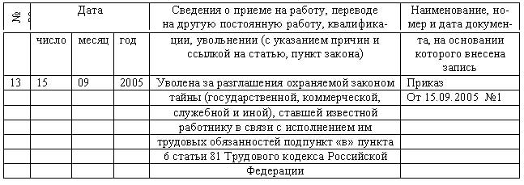

При увольнении не выплатили зарплату. Что делать? Узнайте из нашей статьи.
При увольнении не выплатили зарплату. Что делать? Узнайте из нашей статьи.Особенности увольнения материально ответственного лица
Для успешного функционирования любого предприятия требуется наличие дорогостоящих основных средств, денежные и производственные запасы и другие ценности.
Каждое из этих средств подлежит документальному оформлению, предметам присваиваются инвентарные номера, а за их сохранностью и правильным использованием следят специально назначаемые лица, несущие материальную ответственность за конкретные ценности.
Лицо, имеющее материальную ответственность, как и любой другой трудящийся, имеет право на увольнение по каким-либо причинам, так как Конституция РФ запрещает применение принудительного труда.
Порядок увольнения работников с материальной ответственностью оговаривается в Трудовом Кодексе РФ и имеет свои особенности.
Понятие материальной ответственности работника и ее виды
Трудовое право определяет материальную ответственность как обязанность одного из участников трудовой деятельности возместить возможный причиненный ущерб другому участнику.
В трудовой деятельности принимают участие 2 стороны: работодатель и работник. Оба участника имеют друг перед другом определенные обязательства, выраженные материально.
Материальная ответственность работодателя перед работником
Каждый владелец организации обязательно должен предоставить трудящимся надлежащие условия труда.
Именно он ответственен материально за несвоевременную выплату заработной платы сотрудникам, а также за возможное причинение им убытков морального плана.
Если работник по причине, вызванной виной работодателя, не получил доход, был лишен возможности плодотворной работы, работодатель возмещает ему неполученную заработную плату.
Материальная ответственность работника перед работодателем
Виды:
Данный аспект отражается в трудовом договоре.
Полный перечень должностей с полной материальной ответственностью содержится в Постановлении Минтруда России за 2002 год №85.
Постановление Минтруда РФ от 31.12.2002 N 85
В статье 243 ТК РФ содержится перечень ситуаций, при наступлении которых сумма убытка взыскивается полностью:
Для несовершеннолетних трудящихся полная ответственность материального характера предусмотрена лишь при умышленном причинении вреда имуществу организации, при преступлениях и проступках, а также при состояниях опьянения.
Нормативная база
Трудовой Кодекс в своих статьях содержит основополагающую информацию о видах материальной ответственности в разрезе причин ее появления.
|
Материальная ответственность (по статьям ТК РФ) | |||
|
Работодателя |
Работника | ||
|
за своевременность выплат |
236 |
за прямой действительный ущерб |
238 |
|
за ущерб имуществу работника |
235 |
за ущерб от противоправного поведения |
233 |
|
за лишение возможности работать |
234 |
за ущерб по вине работника |
233 |
|
за моральный вред |
237 |
освобождение от ответственности при порче имущества от непреодолимой силы |
239 |
Также к правильному порядку увольнения материально ответственного лица имеют отношение следующие документы:
Трудовой Кодекс Российской Федерации
Федеральный закон от 06.12.2011 N 402-ФЗ
Приказ Минфина РФ от 28.12.2001 N 119н
Инструкция увольнения материально ответственного лица по собственному желанию
Увольнение материально ответственного лица по собственному желанию – процедура, не запрещенная трудовым законодательством.
При этом порядок действий имеет несколько отличий от привычного процесса увольнения:
Документы
Методические указания по бух.учету № 119н возлагают на специалиста, ответственного за материальные ценности, обязанность предоставить в бухгалтерскую службу организации акт о материальных ценностях, подписанный руководителем и главным бухгалтером, а также иными уполномоченными лицами вместе с новым материально ответственным лицом.
Вместе с актом должны быть оформлены:
Сроки
Сроки увольнения материально ответственного лица не могут превышать нормы для любого другого сотрудника – 2 недели с момента подачи заявления об увольнении.
Конкретная дата последнего трудового дня должна быть четко прописана в заявлении.
В течение этих двух недель по желанию работника заявление может быть отозвано с сохранением прежнего рабочего места, если письменного приглашения на данную должность нового сотрудника не имеется.
Запись в трудовой
Запись в трудовой книжке об увольнении ранее ответственного за ценности сотрудника выполняется стандартным способом.
Если же увольнение произошло по причине грубого нарушения работником правил использования вверенных ему ценностей или конфиденциальных данных, в трудовую вносится соответствующая отметка.
Пример записи об увольнении сотрудницы Ивановой А.А. за разглашение тайны организации представлен ниже:

Пример записи в трудовой книжке при увольнении
Особые вопросы
Всегда ли требуется инвентаризация?
Проведение инвентаризации должно осуществляться по письменной инициативе работодателя.
Именно работодателю важно успеть провести инвентаризацию в течение последних двух недель работы ответственного за ценности сотрудника. По истечении этого периода обязанности приходить на инвентаризацию и передавать необходимые ценности у сотрудника, за которым была закреплена ответственность за эти ценности, не будет.
Без личного присутствия на инвентаризации материально ответственного работника, данная процедура будет недействительна, и работодатель не сможет предъявить никаких претензий.
Инвентаризационная комиссия может обнаружить недостачу или порчу имущества, которая подлежит возмещению: добровольно или через суд.
При увольнении не выплатили зарплату. Что делать? Узнайте из нашей статьи.
Сколько отрабатывать при увольнении по собственному желанию? Смотрите тут.
Как производится расчет выходного пособия при увольнении? Читайте здесь.
Передача материальных ценностей
Материальные активы должны быть возвращены работником в полном объеме, при передаче обязательно присутствие самого работника и иных уполномоченных лиц созданной инвентаризационной комиссии.
Все участники ставят свои подписи, а все обнаруженные дефекты и недостачи отражаются документально.
Если работник взял отпуск
Еще один важный вопрос: как уволиться работнику, если он не отгулял отпуск?
Материально ответственное лицо, не использовавшее дни своего ежегодного оплачиваемого отпуска, имеет право отдохнуть перед увольнением. До начала отпуска все подконтрольные активы быть переданы другому работнику с оформлением соответствующего акта.
Последний день отпуска в таком случае и станет днем увольнения.
Увольнение с недостачей
Если материально ответственное лицо увольняется, но за ним числится недостача, встает вопрос о том, как уволить такого работника.
В такой ситуации необходимо последовательно выполнить ряд действий:
|
Для определения размера ущерба и определения повреждений, причиненных имуществу организации, проводится инвентаризация. |
п. 27 Положения по ведению БУ, утв. Приказом Минфина № 34н |
|
Специально созданная комиссия проводит служебное расследование, устанавливает причины, повлекшие причинение вреда имуществу. |
ст. 247 ТК РФ, ч.1 |
|
Работник в письменном виде предоставляет объяснение причин произошедшего деяния. |
ст. 247 ТК РФ, ч.2 |
|
Рассчитываются фактические потери предприятия по рыночным ценам, зафиксированным в день причинения вреда. Цены не могут быть меньше указанных в бухгалтерских документах, износ также учитывается. |
ст. 246 ТК РФ, ч.1 |
|
Работник узнает о результатах проверки на любых этапах ее проведения и имеет право на их пересмотр. |
ст. 247 ТК РФ, ч.3 |
|
Ущерб, сумма которого не выше средней месячной зарплаты специалиста, взыскивается работодателем на основании внутреннего распоряжения, решения суда не требуется. |
ст. 248 ТК РФ, ч.1 |
|
Работник по соглашению сторон может в добровольном порядке возместить крупный ущерб, воспользовавшись рассрочкой. Он подписывает обязательство о возмещении ущерба, в котором оговариваются конкретные сроки выплат. Если работник уволился и перестал платить по обязательству, эти суммы взыскиваются с него в судебном порядке. |
ч.4 |
|
Большие суммы ущерба, не оплачиваемые в добровольном порядке, взыскиваются работодателем через суд, срок исковой давности – 1 год. |
ч.2 |
Если работник ушел на больничный
Если в последние две недели работы – дни обязательной отработки, сотрудник заболел, оформив при этом больничный лист, отказать ему в увольнении либо потребовать дополнительной отработки работодатель права не имеет.
Увольнение оформляется приказом руководителя, отсутствующий сотрудник дает согласие на проведение инвентаризации. Если ценности он не передал, суд выступит на стороне работодателя и потребует от уволенного сотрудника доказательств его непричастности к имеющемуся в организации ущербу.